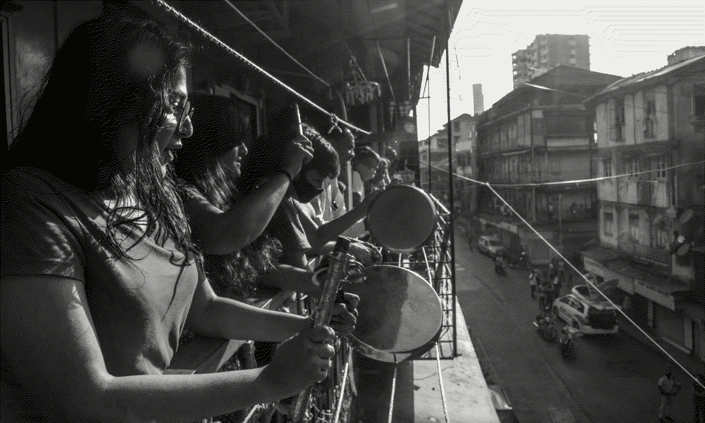

THE PANDEMIC IS A PORTAL
Arundhati Roy
Spring 2020
Added 10-16-2023
Who can use the term “gone viral” now without shuddering a little? Who can look at anything any more — a door handle, a cardboard carton, a bag of vegetables — without imagining it swarming with those unseeable, undead, unliving blobs dotted with suction pads waiting to fasten themselves on to our lungs?
Who can think of kissing a stranger, jumping on to a bus or sending their child to school without feeling real fear? Who can think of ordinary pleasure and not assess its risk? Who among us is not a quack epidemiologist, virologist, statistician and prophet? Which scientist or doctor is not secretly praying for a miracle? Which priest is not — secretly, at least — submitting to science?
And even while the virus proliferates, who could not be thrilled by the swell of birdsong in cities, peacocks dancing at traffic crossings and the silence in the skies?
The number of cases worldwide this week crept over a million. More than 50,000 people have died already. Projections suggest that number will swell to hundreds of thousands, perhaps more. The virus has moved freely along the pathways of trade and international capital, and the terrible illness it has brought in its wake has locked humans down in their countries, their cities and their homes.
But unlike the flow of capital, this virus seeks proliferation, not profit, and has, therefore, inadvertently, to some extent, reversed the direction of the flow. It has mocked immigration controls, biometrics, digital surveillance and every other kind of data analytics, and struck hardest — thus far — in the richest, most powerful nations of the world, bringing the engine of capitalism to a juddering halt. Temporarily perhaps, but at least long enough for us to examine its parts, make an assessment and decide whether we want to help fix it, or look for a better engine.
The mandarins who are managing this pandemic are fond of speaking of war. They don’t even use war as a metaphor, they use it literally. But if it really were a war, then who would be better prepared than the US? If it were not masks and gloves that its frontline soldiers needed, but guns, smart bombs, bunker busters, submarines, fighter jets and nuclear bombs, would there be a shortage?

Women bang pots and pans to show their support for the emergency services dealing with the coronavirus outbreak
Night after night, from halfway across the world, some of us watch the New York governor’s press briefings with a fascination that is hard to explain. We follow the statistics, and hear the stories of overwhelmed hospitals in the US, of underpaid, overworked nurses having to make masks out of garbage bin liners and old raincoats, risking everything to bring succour to the sick. About states being forced to bid against each other for ventilators, about doctors’ dilemmas over which patient should get one and which left to die. And we think to ourselves, “My God! This is America!”
The tragedy is immediate, real, epic and unfolding before our eyes. But it isn’t new. It is the wreckage of a train that has been careening down the track for years. Who doesn’t remember the videos of “patient dumping” — sick people, still in their hospital gowns, butt naked, being surreptitiously dumped on street corners? Hospital doors have too often been closed to the less fortunate citizens of the US. It hasn’t mattered how sick they’ve been, or how much they’ve suffered.
At least not until now — because now, in the era of the virus, a poor person’s sickness can affect a wealthy society’s health. And yet, even now, Bernie Sanders, the senator who has relentlessly campaigned for healthcare for all, is considered an outlier in his bid for the White House, even by his own party.